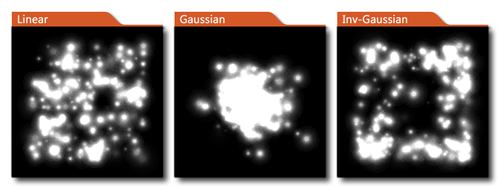

part_emitter_region(ps, ind, xmin, xmax, ymin, ymax, shape, distribution);
| Streit | Beschreibung |
|---|---|
| ps | Das Partikelsystem, in dem sich der Emitter befindet. |
| ind | Der Index des einzustellenden Senders. |
| xmin | Die X-Koordinate der linken Seite der Region. |
| xmax | Die x-Koordinate der rechten Seite. |
| ymin | Die y-Koordinate des oberen Bereichs der Region. |
| ymax | Die y-Koordinate des unteren Bereichs der Region. |
| shape | Die Form der Region. |
| distribution | Der Verteilungsstil der Partikel. |
Rückkehr: N / A
Mit dieser Funktion wird die Position eines Teilchenemitters im aktuellen Raum festgelegt. Sie geben die Begrenzungsbox des Bereichs innerhalb der Funktion an und verwenden dann eine Reihe von Konstanten, um die endgültige Emitterform innerhalb dieser Begrenzungsbox sowie die Verteilung der Partikel innerhalb der Form zu definieren. Die verfügbaren Konstanten für Verteilungsformen sind unten aufgeführt:
| Konstante | Beschreibung |
|---|---|
| ps_shape_rectangle | Eine rechteckige Form, die den angegebenen Bereich ausfüllt. |
| ps_shape_ellipse | Eine Ellipse mit der durch den Bereich definierten Breite und Höhe. |
| ps_shape_diamond | Eine Rautenform mit den Punkten bei halber Breite und halber Höhe. |
| ps_shape_line | Eine einzelne Linie, wobei der Startpunkt links und oben und der Endpunkt rechts und unten ist. |
Neben den Verteilungsformen können Sie auch die Verteilungskurve für die Partikel definieren, die emittiert werden sollen. Die verfügbaren Konstanten für Verteilungskurven sind unten aufgeführt:
| Konstante | Beschreibung |
|---|---|
| ps_distr_linear | Eine lineare Verteilung, bei der alle Partikel die gleiche Chance haben, irgendwo in dem Bereich zu erscheinen. |
| ps_distr_gaussian | Eine Gauß-Verteilung, bei der mehr Partikel im Zentrum als an den Kanten erzeugt werden. |
| ps_distr_invgaussian | Eine inverse Gaußverteilung, bei der mehr Partikel an den Kanten als im Zentrum erzeugt werden. |

part_emitter_region(global.Sname , emit_1, x - 50, x + 50, y - 50, y + 50, ps_shape_ellipse, ps_distr_linear)
Der obige Code setzt einen Emitter auf eine 100px große und 100px breite elliptische Form um die aktuelle (x, y) Position der Instanz, die den Code ausführt.